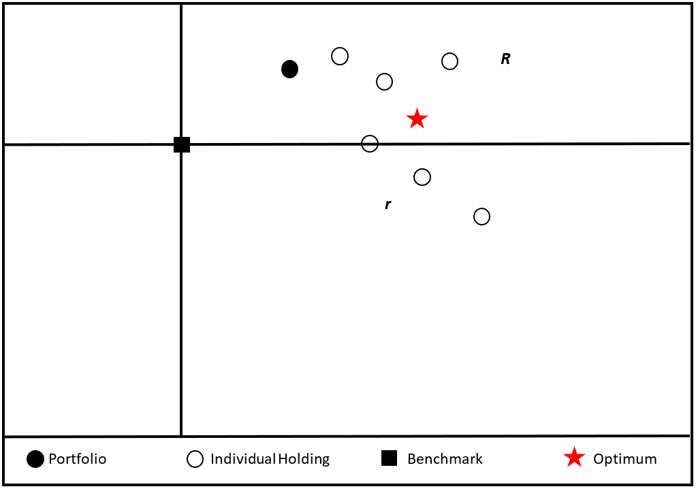

The broad spectrum of assets that comprise the portfolios of Merrill Lynch clients necessitates an in-depth financial analysis so as to comprehend investor goals, successes, and most importantly, investor psyche. This report focuses on United States corporate bonds to delve deep into the complex financial market mechanism. There are a number of different options available to Merrill Lynch clients with incomes of $100,000 or more. These options are examined, first, from the perspectives of the potential investor/shareholder. Then, this process is observed via the perspectives of the financial advisors (brokers) that link the investor portfolio with total earnings to properly assess value and net worth. Broker fees are thus calculated for quality assurance purposes. The world of corporate bonds warrants an understanding of its respective market so as to allocate useful information from partitions of data. An appreciation of the complexity of this financial market mechanism is gained from studying its effects on investor related activities.
In a market of choices, one must recognize the essential differences between core assets before investing in any one of them. Thus it is necessary to classify each asset as a separate and distinct unit in the investor portfolio, then relating one to the other to provide a clear insight into the defining financial market mechanism. When an individual chooses to become knowledgeable in the stock market, he or she will probably decide to use that knowledge to invest at some point in time, \(\mathit{t}_{i}\). Probabilistically, there is a chance between 0 and 1 that the investor will acquire assets at some point l in their life. Numerical measurement of this chance warrants a linear regression equation, but first, a simple linear function is created. Risk, income, and expected gain need to be further assessed. Income i can be measured as total earnings over time t. Expected gain can be further reclassified as expected return from investments and estimated at value \(\mathit{e}_{i}\). However, risk is a bit more difficult to assign a numerical value to as it remains at Pr [0,1].It becomes difficult to measure the exact probability of the risk that is associated with any investment given the circumstances of a constantly fluctuating economy. Ultimately, the prospective investor function (PIF) relegates to
\[\mathit{y}_{i} = {i}_{t}+{e}_{i}+{t}_{i}+{r}_{i}{.}\]
To find expected return from investing, the shareholder must theoretically regress total value of assets \(\alpha\) at initial time t (\(\mathit{\alpha}_{i}\)) vs. expected value of assets \(\alpha\) at present time t \(({\mathit\alpha}_{p})\). The regression model becomes
\[\mathit{y}_{i} = \mathit{\alpha}_{i} + \left( \frac{\alpha}{I} \right)_{p}(t_{i})+{r_i}{.}\]
Thus, having examined the regression model at instantaneous time \(\mathit{t}_{i}\), it can be inferred that the expected value \(\mathit{y}_{i}\) depends on the simple addition of income as a function of expected return on investments, plus time. Typically, investors do not use such complicated formulas to solve these problems. What, when, where, and how to invest is decided simply by “shopping around” for a wealth management firm. This is the “smart way”. Even the shrewdest client will need the expertise of a series 7 and 63 certified NASD broker to at least fill him in on the details. This is why large conglomerates like Merrill Lynch exist. Typically, a Merrill Lynch broker charges fees based on the client’s income. For example, if a client has an annual salary of $100,000, the broker will charge 1.5% of that in stocks, 0.5% in bonds, and 1% in mutual funds. The precise methodology on how the fees are calculated along with the percentage values is contingent upon investor activity. If an investor remains active (a frequent buyer and seller), then he or she will be charged on a transaction basis. Otherwise, if an investor remains a part-time client, he or she will be charged on a commission basis. Either way, the broker earns his fees based on investor activity. The investor must choose his or her investment objectives from income, growth, or total return prior to opening an account.
Secondly, the investor must indicate his or her risk tolerance level from conservative, or moderate to aggressive. A typical client at Merrill Lynch has an annual income of $50,000 or more. So what types of assets can Merrill Lynch clients opt to have managed? The core assets are stocks, bonds, and mutual funds. Stocks, as defined by Alvin D. Hall are “securities a person has in a company that allow him to own a portion of the company as well as receive dividend payments; typically the board of directors meet quarterly to decide the dividend yield per shareholder” (Hall 24). Bonds allow the individual holder to receive fixed interest rate payments from the issuer until repaid in full at the yield to maturity date. It is also important to note that bondholders differ from shareholders of company stock. Whereas shareholders have voting rights and own a portion of the company, bondholders are exempt from ownership concessions. Bondholder financing is used to fund the sale of debt securities, whereas shareholder financing is used for the purposes of equity holder (stocks) financing. A crucial point in the managerial decision making process involves figuring out leverage. What does this mean? “Leverage is the amount of outside funds (debt) the owners use compared with their own contribution in financing the corporation’s assets. The greater the use of debt, the greater the potential gain or loss to ownership shares of a given investment of capital” (Madden 172). Consequently, the corporation faces a risk in using debt to finance capital investments.
Corporations, municipalities, and other government entities are all issuers of bonds. A bond, generally speaking, is the highest security that a corporation can give. A client who is looking to buy bonds at a low price will opt for municipal bonds because they are tax-exempt, low risk, and are purchased at cost. Government agencies pose a lower risk than corporations. The smart investor is likely to pick municipal bonds for this reason. However, there remains limited growth potential with municipal bonds based on risk factors and principal cost alone. One who is reluctant to make decisions with large sums of money, is, to a certain extent afraid of portfolio diversification. Therefore, given a fixed budget constraint, the investor fears personal utility maximization. For this reason, portfolio diversification visa vie direct investment in U.S. corporate bonds warrants a serious discussion.
First and foremost, “a bond is a written credit instrument in the promise-to-pay category. One of the common orders-to-pay negotiable instruments is the draft or bill of exchange. This instrument is an order to pay money. A draft may be defined as a written instrument created by the drawer (the one who draws up the instrument), addressed to a second party, the drawee, who is ordered to pay “a sum of money certain in amount” to a third party, the payee, on a fixed or determinable future date. A draft or bill of exchange can be drawn so that a payee is not named, merely by drawing it to the bearer, who would be the person holding the instrument and presenting it for payment” (Musselman 480). The process is summarized as follows. The bank issues an order to pay and hands it over to the corporation. The corporation must pay the creditor within the agreed timeframe so as not to default.
If bondholders do not receive their fixed interest rate payments, they have the legal right to file a lawsuit against the corporation. The court will determine a judgment in the creditor’s favor, thereby forcing the company into bankruptcy. “A corporation is considered bankrupt if its assets are insufficient to meet its liabilities as adjudged by a court examination. In case of bankruptcy, the value of assets sold must go to pay bondholders first…Bondholders receive priority over general creditors because, as long-term lenders, they expose their funds to risk for a longer time, on average, then general creditors” (Madden 172).
“When bonds are sold by a corporation, they become a part of its capital structure” (Musselman 125). When a company needs to borrow money for over six months to a year, it will more than likely decide to sell its bonds as opposed to distributing additional stock. This is beneficial to the bondholders because their entitlement to a share of the company’s revenue precedes that of the common and preferred stockholders. Bonds are assets in the corporate framework that can be further broken down into subcategories. Namely, mortgage bonds, income bonds, collateral trust bonds, equipment trust bonds, and debenture bonds are all qualified types of corporate debt that are either secured or unsecured. A mortgage bond is a safe security that allows for the “real property” of the corporation to be financed by its sale. If the par value of the bond cannot be repaid in due time by the corporation, the corporation will waive its rights and privileges to ownership to the investor by law. The investor may be able to, in turn, sell the corporation at a price equal to the size of the loan. According to the text Introduction to Modern Business, a specific example of a mortgage backed security is Consolidated Edison’s 5 percent Series N which should have matured back in 1987. “These bonds were issued in the amount of $60 million, secured by a mortgage on the corporation properties” (Musselman 440).
If the principal of the bond cannot be secured by real property, then collateral is the next best alternative. Collateral trust bonds allow the investors to receive collateral in the form of other bonds and/or stocks that are provisioned by a trustee on the account.
Then there are income bonds. These bonds pay an interest rate over and above all other fixed costs. When chief executive officers find themselves in the process of reorganizing their corporation, they may decide to issue income bonds as a substitute for the fixed interest rate. This is done to avoid the hassle associated with doling out money at regular intervals despite corporate success or failure. Even though such bonds have maturity dates, the bondholders might not get paid on time if the company is doing poorly.
Yet if a company is successful, it need not worry about such problems. Sometimes it is necessary to finance capital expenditures. In doing so, corporations might find equipment trust bonds to be safe. Of course, this also depends on the type of business. In the manufacturing sector, railroad companies need to buy new and improved equipment as they expand the railways system. For example, a railroad may want to buy 25 new locomotives but cannot assemble enough cash to make the purchase without impairing its cash position. So it takes a down payment of 15 or 20 percent of insurance companies and trust companies, under an equipment trust agreement to finance this operation. Interest is paid at fixed periods to the trustee, who in turn pays the bondholders. When the bonds are fully paid, title to the equipment reverts from the trustee to the railroad company.
Last but not least are debenture bonds. These “are backed solely by the general credit of the company, and not by a mortgage or any pledged assets.” When a business needs to refinance an old debt, it will turn to debenture bonds. “Since 1946, the American Telephone and Telegraph Co. has sold nearly $5 billion worth of debenture bonds for its equipment expansion program. Of this total, $3.2 billion was raised by selling debenture bonds that could be converted into common stock under certain conditions. The Standard Oil Co. of New Jersey, Consolidated Edison of New York, and the Coca-Cola Co. are among the large companies that have sold huge sums of debenture bonds at low interest rates. (It was easy to find buyers for these bonds because of the sound financial condition of these corporations.) As a rule, these debenture bonds carry a slightly higher interest rate than other bonds because they are not secured by a mortgage; therefore, the risk to the investor is greater” (Musselman 440-441).
Business deals and ventures are brokered by investment bankers. When a corporation decides to expand out to the far reaches of the market’s capabilities it uses every feasible resource at its disposal. Investment bankers provide venture capital (otherwise known as startup capital) to investors of high-risk companies oriented in technological innovation. As a result, such commitments generate a total return of investment equal to the equity position in the firm of interest. On the opposite end of the spectrum, the corporation might need to borrow money from wealthy investors to finance their business ventures. Wealth management plays a crucial role in this struggle as corporations are lined up on one side of the “chess board” and investment management firms on the other. Those who seek high yields of returns given their investment potentials are the probable winners of this game. As an incentive, the corporation makes its bonds available to the public. Investors purchase the bonds on one end, whereas, the corporation receives payment in the form of a loan. Preceding repayment of the principle, the corporation releases the payments back to the consumers at fixed annual interest rate intervals. This is how investments on both ends are financed.
A crucial step in determining strategies for clients is to look at the net asset value of a security (NAV). This applies to book values of bonds and is computed by determining “the total assets less any intangible asset, less all liabilities and securities having a prior claim, divided by the number of units outstanding.” 1: This means that all intangible assets along with prior bond claims are jointly removed from this equation.
To illustrate the effect of corporate bond investments on the U.S. economy and vice versa, it is necessary to look as far back in history as 1900 to get a sense of the changes that have occurred over the last one hundred-and-seven years. According to the research of Hickman and Atkinson, this record is characterized by a cyclical behavior ranging from very poor performance to revitalized and improved performance. “Between the years of 1900 and 1943, 17.3 percent of “of the outstanding par value of bonds defaulted” (Bolten 281). In layman’s terms, this suggests that a significant amount of bonds in that era did not pay the semi-annual fixed interest rate per investment. Also, these bonds, as an aggregate did not pay back the face value loaned out by the investors. In contrast, however, only 10 percent of such bonds defaulted between the war-torn years of 1945-1965 (Bolten 281). The allied forces were defeated during World War II and the U.S. economy was revitalized with a substantial increase in growth rates. To elaborate, it is first necessary to define GDP (Gross Domestic Product). GDP is defined as the total dollar value of all goods and services produced annually within a country’s borders. In 1950, the GDP per capita in the United States was 9,573.00 compared to $ 4,096.00 in 1900. These figures alone suggest that the United States economy has ranked higher over fifty years of data in terms of per capita income estimations. In 1900, the U.S. was ranked third among other nations and in 1950 it was ranked first. Topping the list was a sure sign of progress to most favored nation status.2
The United States gave rise to inventors that in turn gave rise to technological progress and vice versa. Historically, the bond market has been responsive to technological progress. However, to seal the deal on profit-seeking behavior, patents and copyrights were necessary for inventors to sell their ideas to firms. Shortly before the 20th century, manufacturers of capitalintensive products consolidated their firms to counter the effects of a competitive industry. Ever since 1893, there has been considerable expansion in the manufacturing sector (Lamoreaux 87). Now such firms are re-defined visa vie mergers and acquisitions.
Around 1900, there was sub-sufficient innovation as opposed to later stages, so the bond market gave little incentive for loan giving consumers to finance budding corporations. Ford Motors is a perfect example of a developing corporate bond market. In 1903 Henry Ford and a small pool of investors incorporated Ford Motors. Profit maximization was their goal. Over the years, however, substantial technological progress was made. Through its impeccable research and development strategies, Ford Motors grew out of the Model-T. In so doing, the corporation enabled newer models like the Taurus and the Mustang to become reliable and investor-worthy. Ford was not offered publicly until January 18, 1956 at $64.50/ share, so little is known about its bond market prices at that time. What can be inferred, however, is that as the corporation grew, it went through cyclical peaks and troughs of typical bond market behavior.3
For example, the concept of bond investing can be illustrated with “a 10-year bond issued by the Ford Motor Company paying a 7% annual interest rate. You pay $1,000 (the par or principal value) when the bond is issued, i.e., you lend Ford $1,000. You receive $35 in interest from Ford every six months ($1,000 x 7% = $70 per year or $35 every six months; 7% is the”coupon interest rate“). After the 10-year period (the bond’s”maturity“), Ford pays you back the $1,000 you lent it.”4
Recent trends suggest, however, that the conglomerate merger GM and Ford have not been doing so well. In an article published early May by the Washington Post, columnist Greg Schneider suggested that Standard and Poor’s hacked the two giants’ ratings to junk bond status. This implies that the two giants have lost a substantial share of investments to global competitors Honda and Nissan. Furthermore, the U.S. firms’ production costs may have disrupted their efforts in developing fully satisfactory cars. Standard and Poor’s suggests that Ford and GM have downsized their profit margins by developing SUV models, a substantial profit maximizing tool that ultimately failed. While Ford and GM sought out local buyers in the U.S. by financing their products and in turn being financed by bond buyers, they were defeated by a global giant (Schneider, E01). Japan is known for its versatile production of cars; be it Honda, Nissan, or Mazda, Japanese companies know how to cater to a global clientele full of unlimited appetites. They do not focus on SUV production as the sole source of revenue. Therefore, their capital gain potential is significantly higher. For the long haul, they will continue to show sure signs of dominant-firm strategy behavior as long as such market trends persist.
Rating a company’s bonds down to junk level increases their cost of borrowing and limits the availability of preferred credit. Therefore, corporations that need to raise revenue issue junk bonds that deliver a high rate of interest while offsetting the substantial risk of default. Even though the word “junk” has a negative connotation, it does not necessarily reflect negatively on investments. For instance, if an investor is looking to buy affordable corporate bonds he might decide to purchase “junk” bonds.
Long term investments in junk bonds are made with the expectation that they will be high-yielding debt securities, despite their sub-par ratings. “In their attempt to rate bonds, the ratings agencies look at such factors as the adequacy of earnings to cover interest and amortization…limitations on new debt, dividend payments, and merger activity” (Bolten 282). In effect, the ratings agencies look at the accounting costs (expenses) the businesses incur. Amortization takes place in accounting when a bond that is purchased above par value is adjusted to face value (Fitch 19). This process is necessary because investors eventually expect to receive payment in full aside from the fixed interest rate payments. The ratings agencies also acknowledge corporate debt as a source of potential revenue loss. Ford, alone, in 1999 sold $8.6 billion in debt. This put Ford ahead of other corporations.5 Selling off debt is a corporate strategy conducive to growth. Otherwise, if corporate debt accumulates to the point of saturation where it cannot be sold off, investor relations are negatively impacted. Thus, the ratings are also negatively affected. Finally, the S&P looks at corporate performance based on company financial statements on a case by case basis. Standard and Poor’s ratings in descending order are as follows: AAA, AA, A, BBB for investment grade bonds in general. Specifically, an A rated bond is a sure sign of an issue that is investment grade. BBB rated bonds are right on the border between investment grade and below investment grade. The S&P uses the same ratings in descending order: BBB, BB, B, CCC, CC, C, to classify bonds that are generally below investment grade. Pluses and minuses are also used to further assess corporate performance. So when the S&P rated a bond down to BBB, they classified it as having a high risk and volatility. Anything below the BBB rating puts the corporation in jeopardy of bankruptcy. “CCC and CC grade bonds are considered outright speculations, and C rated bonds are income bonds (usually issued in reorganization and on which interest is paid only when earned) that are not paying interest. DDD and below are bonds that are in default.” The ratings in one agency compare with those in the other. A S&P AAA is equivalent to a Moody’s Aaa, although the two agencies do not necessarily agree on the quality of a particular bond and may assign different ratings to the same bond” (Thaler 282). For all intents and purposes, this report focuses on the S&P 500 as an indicator of bond ratings.
Throughout the years the bond ratings agencies have tried to be fair, though, subjectivity remains to be seen as the basis of evaluation. “The record of the agencies has been reasonably good. From 1900 to 1943, the occurrence of default increased as the rating quality decreased (see Table 14.2).6 “At the beginning of 1926, the coupon on long-term AAA corporate bonds was 4.9% - not too far off the actual return for 1926-1998 of 5.77%” (Bernstein 23). The default rate as a percentage of par value rose from 6 percent in the AAA and AA ratings to 13 percent in the A rating and to 42 percent in the BB and below ratings” (Thaler 283). This means that 6 percent of AAA and AA rated bonds defaulted in repaying the principal loan, whereas, the A rated bonds defaulted on 13 percent, and the BB and below rated bonds defaulted on 42 percent of the principle value. There was a linear relationship, namely, a positive correlation between negatively rated bonds and likelihood of defaults. “The record since 1945 is difficult to judge because of the limited number of defaults and their concentration in the railroad industry. The agencies also exhibited a good record of downgrading the rating quality of a bond before it defaulted” (Thaler 283).
Moreover, evidence suggests that ratings increase as business cycles go through up-trends (peak); whereas, ratings decrease as business cycles hit a downward spiral (trough). W.B. Hickman was at the forefront of this research project in the late 1950’s. He concluded that as the business activity expands, the ratings improve, and as the business activity contracts, the ratings are lowered. “A partial explanation for this cyclical pattern lies in the sensitivity of the various financial ratios used by the agencies to the business cycle. As the financial ratios change with the business cycle, the agencies respond by changing their ratings. Since 1945, this cyclical pattern among the ratings has not been so evident” (Thaler 283).
Also, Hickman delved into the market rating system to discover another gauge for measuring bond ratings. He found that “bonds were rated in terms of the premium that the promised yield represented over the pure interest rate yield that prevailed at the time of the offering” (Thaler 283). In other words, the ratings were based on the interest rate yield given the premium. According to the Dictionary of Banking Terms, a premium in finance is defined as “the difference between the face value of a bond and the ABOVE PAR price. Bonds purchased at a premium are amortized over their expected life; if purchased at a discount, their book value is said to accrete or grow towards par from the date purchased” (Fitch 353). As a result, the rate of default rises with respect to the premium. Therefore, the quality of the premium will determine the overall success of the bond upon repayment.
With a substantial risk, there exists a greater chance that a corporation will default on timely repayment of debt securities. Ratings are important to investors because they measure the overall track record of a corporation, much like a credit score measures a consumer’s credit history. Even though it makes sense to say that when a corporation is successful, so is the investor; this is not always the case. With risk, there exists either failure or reward. If one were to measure the precise risk associated with investing in junk bonds, it would be rather difficult to understand this by ratings alone. What is known, however, is that an inverse relationship exists between risk and rating. As the risk factor increases, the rating decreases.
The process of risk assessment can be developed from the abridged yet significant yield-to-maturity formula
\[p = {\Large\sum_{i=-1}^{-n}} c{(1+r)^{-n}} + B{(1+r)^{-n}}\] Yield-to-maturity can be used because this composite of coupon payments over n years has the potential of becoming a capital gain or loss. The risk variable \(\mathit\omega\) with loss probability [0,1] becomes noted in
\[ p = |\omega| \cdot[c(1+r)^{-n}+B(1+r)^{-n}]{.} \] Thus,
\[ p = \omega =\frac{p^n+pr^n}{C+B}{.} \] where c = the annual coupon payment , n = the number of years to maturity, B = the par value, and P = the purchase price
If the equation is manipulated to \(\omega = \frac{p}{0} {,}\) then the risk variable is undefined.7
Formalizing the equation for s, we have
\[ \large{s} = \large\sqrt{s^2} = \sqrt \frac{\LARGE\sum\limits_{i=1}^{n}\large(x_i-\overline{x})^2}{{n-1}} \]
Aside from yielding an estimate for investment risk, the standard deviation suggests that “ two-thirds of the time the annual return of the asset will lie between 1 standard deviation above and 1 standard deviation below the mean value” (Bernstein 6). Following Chebyshev’s Rule8, we see that as \(\lim\limits_{x \to +\infty} \left(1-\frac{1}{k^2} \right){,}\) the measurements will continue to fall within k standard deviations from the mean. The minimum value for k must be 2 such that \(\large¾\) of the measurements will fall within 2 standard deviations of the mean. Therefore, placing the annual return of the asset “between 1 standard deviation above and 1 standard deviation below the mean value,” as Bernstein suggests, is a long shot; but it can occur, nonetheless. It is known that the standard deviation of the annual returns on short-term bonds is 3% - 5% and 6% - 8% on long-term bonds.
Before purchasing a security of any type, it is vital to consult a NASD certified broker about its standard deviation of annual returns. However, it is important to remember that past performance is not indicative of future results. So if one wishes to extrapolate expected annual return, the IPO price: \(\omega = ps = p\sqrt{s^2}\) must also be figured in.
Investors are often faced with the dilemma of maximizing their reward given a risk associated with portfolio diversification. This risk-to-reward relationship is plotted on a two dimensional graph in rectangular coordinates where the x axis is the side of reward and the yaxis is the side of risk. One of the advantages of utilizing Morningstar software is its ability to spit out graphs that figure in risk, reward, alpha, beta, and R-squared given a number of assets. Alpha measures the difference between a portfolio’s actual returns and its expected performance, given its beta and the actual returns of the benchmark index. Alpha is often seen as a measurement of the value added or subtracted by a portfolio’s manager. Beta is a measure of the degree of change in value one can expect in a portfolio given a change in value in a benchmark index. A portfolio with a beta greater than one is generally more volatile than its benchmark index, and a portfolio with a beta of less than one is generally less volatile than its benchmark index. R-squared reflects the percentage of a portfolio’s movements that are explained by movements in its benchmark index, showing the degree of correlation between the portfolio and a benchmark. This figure is also helpful in assessing how likely it is that alpha and beta are statistically significant. To maximize total return on assets, the investor needs to diversify his portfolio such that his risk to reward outcome is optimally scattered along the north-west region of the second quadrant of the graph. Below is a graphical illustration of atypical investor trends highlighting an optimum scenario. I begin modeling this relationship using a g (gain) function to show the potentially substantial risk associated with investing in any set of assets.
\[ G = \sigma{r}^\alpha{R}^{\alpha+1}{.}\] The investor wishes to maximize his gain subject to the potency p of the investment. This is equal to the standard deviation (\(\sigma\)) times the risk (r), plus the reward (R) multiplied by depreciation \((\delta){.}\) With any investment, there exists a possibility of less than perfect reward, so we account for the loss on an investment by using the depreciation variable \((\delta){.}\)
\[ P = \sigma{r} + \delta{R} {.}\] Using the method of Lagrange, we have
\[\begin{eqnarray} L &=& \sigma{r}^\alpha{R}^{\alpha+1} + \lambda{(P-\sigma{r} - \delta{R})}\\[10pt] \frac{\partial L}{\partial R} &=& (\alpha + 1)R^\alpha\sigma{r}^\alpha - \lambda{\delta} = 0\\[10pt] \frac{\partial L}{\partial r} &=& (\alpha{\sigma})r^{\alpha-1}{R}^{\alpha+1} - \lambda{\sigma} = 0\\[10pt] \frac{\partial L}{\partial \lambda} &=& P -\sigma{r} - \delta{R} = 0\\[10pt] \frac{\delta} {\sigma} &=& \frac{(\alpha + 1)r} {\alpha{R}}{.} \end{eqnarray}\]
 Alpha \((\alpha)\) increases with risk, Therefore, risk (r) outweighs reward (R).
One dilemma that investors face at Merrill Lynch is locating a perfect plot to time vs. money. There is no perfect map to this approach. However, there are some great ideas to help clients. One idea sprung from a Merrill Lynch publication dated July, 11, 2006, entitled: “The RIC Report.” A seasoned financial advisor from the New York headquarters suggested that as time progresses, the probability of losing money decreases. As there is an inverse relationship between time and money, investors should focus on the long run of market behavior and ignore irrelevant short-term market hiccups. Statistically, there exists a 46% chance of losing money when investing in the S&P 500 for one day. Presumably, this percentage decreases as the time horizon increases. The primary outcome resembles a “heads and tails” probability game from elementary statistics.Moreover, expanding markets have an established identity where securities have been traded frequently, in contrast to markets that recently emerged. A positive correlation exists between time and money. Unfortunately, this is a general statement as well as the opinion of one financial analyst. Merrill Lynch corporate bonds, for instance, have not shown an increase in performance in 2006. The chart is summarized as follows:
| 2005 | 1 month | 3 months | 12 months | YTD | |
|---|---|---|---|---|---|
| Corporate Bonds | 2 | 0.1 | -0.4 | -2 | -1.5 |
The year 2005 was marked by a strong positive increase in market performance by 2 points. However, in 2006, the market was beginning to deteriorate from barely positive to an increasing negative. Finally, the decline was halted at -1.5 points, ending the bumpy ride. So, from year 2005 there has been a remarkable change in performance. However, this does not suggest that the market decline continued throughout the year 2006, and as such, it is important to highlight this chart as a segment of short-run data.
An uninformed investor would look at these trends and assume market degradation and/or failure from the data alone. There is enough evidence to support the claim that this particular bond market was on a steady decline, but not enough to support any claims of market failure in the long run.
Before discussing the long run, it is necessary to see this short-run behavior from the perspective of a financial analyst. Having viewed this chart, what should an investor do in the short run? One way to cope with risk-related anxiety is to find solace in three suppressed industries, namely, pharmaceuticals, media, and telecommunications. While an average consumer may have serious doubt in the failure or success of these three sectors, there is a sure sign of hope. First and foremost, the drug companies will continue to release new and improved medications into the market. Although drug ingredients such as the phenylpropanolamine (PPA)9 in cough and cold medications have been recalled, alternative ingredients will become available for consumers. As far as the media is concerned, there are numerous examples of television sitcoms that have gone off-air. New ones have always arrived to fill the airspace while balancing ratings. As far as telecommunications are concerned, companies like Time Warner and AOL have merged. Other examples prove a more positive trend such as in the case of Pacific Bell. In this case, Pacific Bell was reincorporated as Cingular, which in turn merged with AT&T. Now, AT&T is the world’s leading telecommunications giant. With net revenues of over $117 billion dollars, AT&T has gone on to merge with BellSouth and Yellowpages.com as well as sponsor the Olympic Games. In 2006, it topped Fortune Magazine’s Most Admired Companies list.10
Clearly, all of these examples illustrate the substantial turnarounds in industries that are unlikely to succeed. As a result, the Federal Reserve Board may likely elasticize its iron grip on corporate conglomerations, thereby, allowing for a steady flow of investments to come in. This, of course, all depends on market liquidity in the short run. If such corporations allow for an easy convertibility in assets to cash, investors might take this as a sure sign of progress. In the short run, a tangible liquid asset can protect the consumer against recession and ease the burden of income management. For example, a person can convert his bond notes to cash and deposit the funds into his checking, savings, and/or retirement account(s). An option that Merrill Lynch clients have is to open a Cash Management Account or (CMA). On the other hand, if the Federal Reserve Board determines to ease up on liquidity too much by way of the Central Bank, fiat money may hold more of an intrinsic value to the consumer in the form of cash. This may be one way the government can try to keep consumer spending in check. At the same time, as cash withdrawals become increasingly commonplace, this may present a problem for investors; perhaps a reversal of fortune. In the worst case scenario, they can convert their assets to foreign currency.
However, it is essential to be wary of these tactics as they do not protect the investor from long term phenomena like recession or inflation. So which strategy is the best to use? Suppose an investor is in the aging baby boomer generation that is reaching close to retirement age. As a result, healthcare costs increase. While this generation is scrambling to pay for their doctor visits,the economy is at risk of recession. I am not talking about a ROTH IRA or a 401(k). Perhaps, this would be a good time for investors in this intergenerational cluster to pursue purchasing corporate bonds in the pharmaceutical sector. In fact, this would be a great idea because this turnaround industry carries with it a lower than substantial risk. No matter how bad the economy is at any given time, there will always be a need for healthcare; and if there exists a potential risk for bankruptcy for a given company, then investors will find comfort in the fixed interest rate payments plus the principal associated with bonds.
Goal oriented investors should consult with their financial advisor(s) to decide on a safe asset allocation mix for their portfolios. According to the “RIC Report,” the asset allocation guidelines as of July 10, 2006 are as follows:
| Recommended | Policy Range | |
|---|---|---|
| Equities | 50% | 40 - 100% |
| U.S. Stocks | 35 | 40 - 80 |
| Non-U.S. Stocks | 15 | 0 - 20 |
| Bonds | 30 | 10 - 50 |
| Cash | 20 | 0 - 30 |
| Alternative Investments | 10* | 0 - 20 |
Source: Merrill Lynch Investment Strategy
From this chart, it is plain to see that bonds are not as popular as stocks and are recommended to investors to account for less than half of their portfolio’s value. This chart also shows that bonds are accounted for 10-50 percent at Merrill Lynch compared to a stronger percentage in stocks (40-100%).
Nonetheless, the investor must choose his ground carefully. Through the expert advice of experienced professionals and by keeping up with the markets, one can become better informed about the upshots as well as the downward trends in industry related affairs.
Merrill Lynch is just one of many global firms that manage high net worth clients’ money as well as branch out into other arenas such as investment banking and global research. There are other corporate giants among the ranks. For instance, J.P. Morgan, Goldman Sachs, Smith Barney (Citigroup) and Morgan Stanley also rank among the top 10 money managers in the United States. Merrill Lynch remains second to none.
The purpose of this paper was to discuss corporate bonds as specific debt securities, their market trends, and their ratings. In some cases, personalized formulas were developed for the purposes of illustrating risk factors involved with below investment grade bonds. For the most part, however, charts and other numerical examples illustrated historical facts based on bond performance. The following message is to be found meaningful for prospective and current investors. “Past performance is not indicative of future results.” Not only does this apply to corporate bonds, but even more so to stocks, mutual funds, and all other forms of assets.
| Agency rating | Default rate | Promised yield | Realized yield |
|---|---|---|---|
| AAA | 5.9 | 4.5 | 5.1 |
| AAA | 6.0 | 4.6 | 5.0 |
| A | 13.4 | 4.9 | 5.0 |
| BBB | 19.1 | 5.4 | 5.7 |
| BB and below | 42.4 | 9.5 | 8.6 |
SOURCE: W.B. Hickman, Corporate Bond Quality and Investor Experience, National Bureau of Economic Research, Princeton University Press, Princeton, N.J., 1958, p. 10
Works Cited
Madden, Carl H. The Economic Process. Illinois: Scott, Foresman and Company, 1969
Musselman and Hughes. Introduction to Modern Business. Analysis and Interpretation. New Jersey: Prentis-Hall, Inc., 1950
Thaler, Richard H., ed. Advances in Behavioral Finance. New York: Russell Sage Foundation, 1993
Bernstein, William J. The Intelligent Asset Allocator. New York: McGraw-Hill, 2001
“Ford Debt Offering Fetches U.S. Record $8.6B- July 9, 1999” 9 July. 1999. Lkd. Ford Bonds Burn Rubber 9 July. 1999. http://money.cnn.com/1999/07/09/companies/ford/
Fitch, Thomas P. Dictionary of Banking Terms. New York: Barron’s Educational Series, Inc., 2000
McClave, James T. A First Course in Statistics. New jersey: Prentice Hall, 2006
NationMaster- Statistics > GDP per capita in 1900 by country. 25th Feb. 2007. Lkd. Economy Statistics. 25th Feb. 2007. http://www.nationmaster.com/graph/eco_gdp_per_cap_in_190- economy-gdp-per-capita-1900
Ford Motor Company Stock Splits. 12th Mar, 2007. Lkd. Stock Splits. http://www.ford.com/en/company/investorInformation/stockInformation/stockSplits.htm
Phenylpropanolamine (PPA) Information Page. 23rd Dec. 2005. http://www.fda.gov/cder/drug/infopage/ppa/ AT&T Investor Relations. http://www.att.com/gen/investor-relations?pid=5711
Hall, Alvin D. Getting Started in Stocks. New York: John Wiley & Sons Inc., 1997
Bolten, Steven E. Security Analysis and Portfolio Management. An Analytical Approach to Investments. Graduate School of Business, New York University, University of Houston, 1972
Lamoreaux, Naomi R. The Great Merger Movement in American Business. 1895-1904, Brown University
MyFrs: Basics: Bonds (and Bond Funds) http://www.myfrs.com/content/basics/bonds.html
Schneider, Greg. “GM, Ford Bond Ratings Cut to Junk Status.” Washington Post. 6 May 2005 E01
Merrill Lynch- Terms and Definitions For Financial Planning and Investing↩︎
http://www.nationmaster.com/graph/eco_gdp_per_cap_in_190-economy-gdp-per-capita-1900↩︎
http://www.ford.com/en/company/investorInformation/stockInformation/stockSplits.htm↩︎
Table 14.2 is on page 15↩︎
\(\displaystyle \lim_{x \to +\infty} \left( \frac{1}{1+r} \right)= 0\)↩︎
“Chebyshev’s Rule applies to any data set, regardless of the shape of the frequency distribution of the data” (McClave 72).↩︎